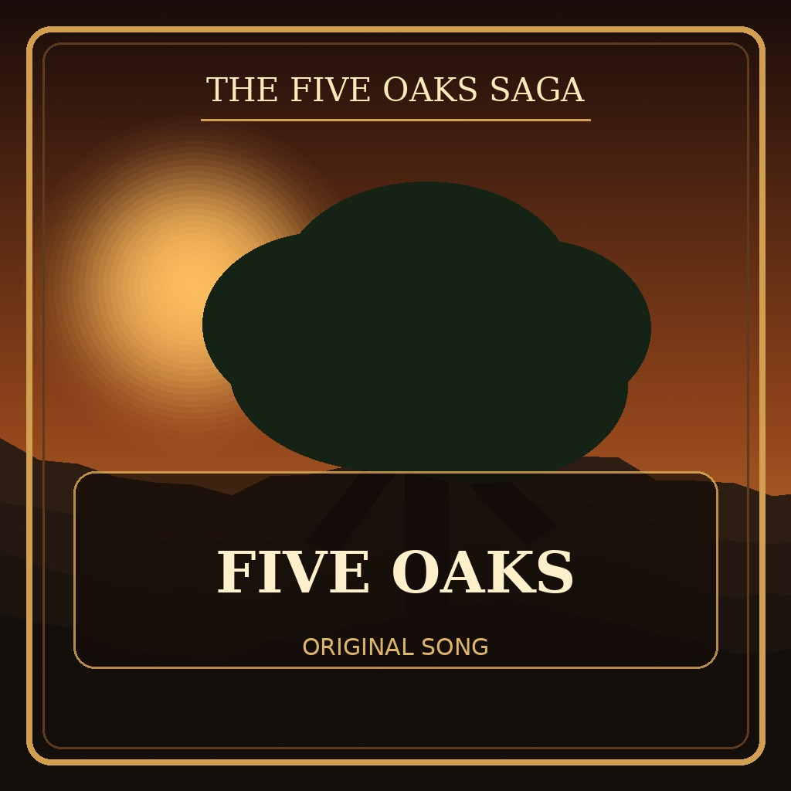

The World of Five Oaks
Five Oaks Radio
Your Five Oaks music, available anywhere your phone has internet service. Your laptop does not need to be on.

Now playing
Five Oaks
Song 1 of 10
Ready. Press Play to start Five Oaks Radio.
The station continues through the playlist automatically. Phone and car controls can pause, resume, and skip when your browser supports them.